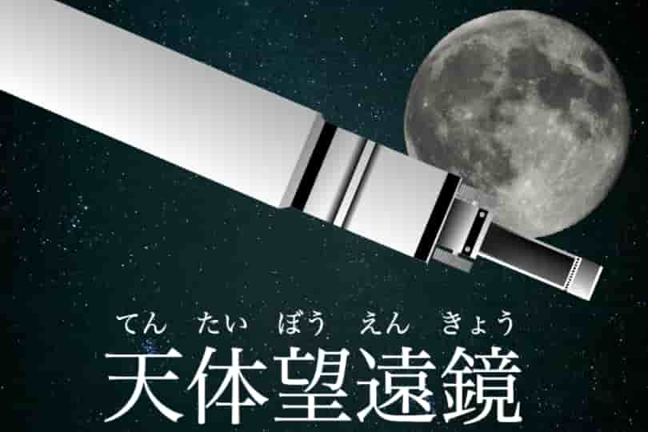

天体望遠鏡（てんたいぼうえんきょう）

リンク
以下のリンクから実際に作品をプレイすることができます。
SCRATCHで見る YouTubeで見る使用方法
天体望遠鏡を使って夜空の月や惑星を観察するゲームです。
ゲーム内の天体
ゲーム内には9個の天体があります。普段は見ることが難しい惑星も見ることができます。
キーの操作
矢印キーで望遠鏡の向きを上下左右に動かすことができます。ただし、望遠鏡は上下左右が反転しているため、移動したい方向と逆の矢印キーを押してください。